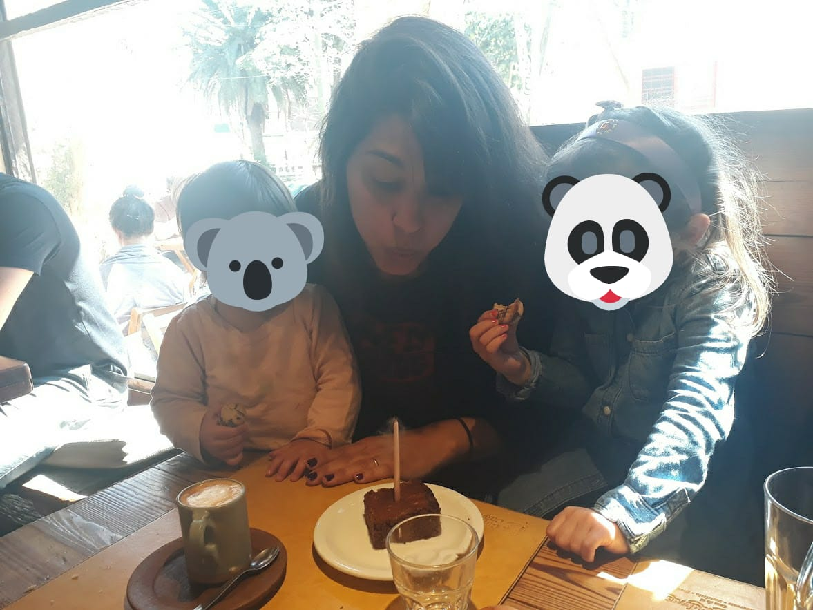

Me gradué como Lic. en Psicología en el año 2012 en la Universidad de Buenos Aires.
Me formé en diseño de Políticas Públicas y gestión de organizaciones sociales, y finalice mi diplomatura
Género y Movimientos Feministas en la Facultad de Ciencias Sociales de la Universidad de Buenos Aires en
el año 2019.
En el año 2008 me sume a un proyecto social en el Barrio Mujica, organizando talleres
para niñes y adolescentes en situaciones vulnerables. Trabajamos sobre muchas temáticas, pero en
paralelo al trabajo con las infancias, surgió un proyecto con las madres de la comunidad introduciendo
por primera vez al universo feminista.
Comencé mi trayectoria laboral en el tercer sector, enfocandome al ámbito educativo y
siempre en contextos de vulnerabilidad social. La infancia y la adolescencia fueron centrales en
todos los proyectos profesionales que encaré.
Estuve a cargo del diseño y la implementación de proyectos, coordinando equipos de
trabajo y voluntarios, buscando incorporar a cada paso la perspectiva de género frente a las
distintas problemáticas con las que nos enfrentamos.
Comencé mi trayectoria laboral en el tercer sector, enfocandome al ámbito educativo y
siempre en contextos de vulnerabilidad social. La infancia y la adolescencia fueron centrales en
todos los proyectos profesionales que encaré.
También realicé un viaje por sudamérica en el que participe de distintos proyectos
sociales, nuevamente con poblaciones de riesgo y junto con organizaciones sociales cuyo objetivo
estaba relacionado al ámbito educativo. Junto a una de estas organizaciones pudimos armar un
protocolo de trabajo para realizar talleres de empoderamiento femenino con las madres de la comunidad ladrillera de Arequipa, en Perú.
Estas experiencias me formaron en género, en problemáticas sociales, en educación, y me dieron un marco de referencia
con el que me guío en mi propio proceso de maternar, cosa que hago desde el 2015, cuando nació mi hija mayor.
En el 2018 comencé a dictar talleres y webinars sobre crianza con perspectiva de género que continúo al día
de hoy, de manera freelance y en colaboración con organizaciones. También, participe de investigaciones y
colabore en la redacción de artículos en relación a la temática, y se convirtió en el centro de mi interés profesional.
En el 2020 comencé este blog, en un contexto muy particular que me permitió,
por razones de fuerza mayor, hacer un parate del trabajo tradicional al que venía acostumbrada.